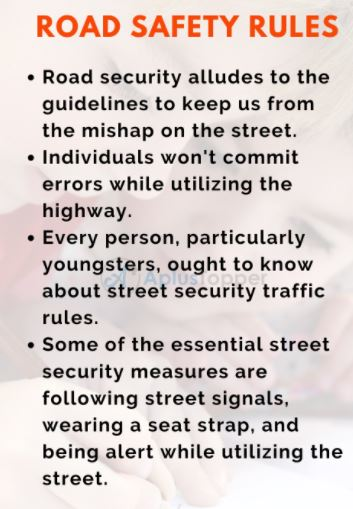

(Image taken from learnforenglish.com)
(Image taken from cardekho.com)
(Image taken from BuySafetyposters)
(Image taken from Aplustopper)
What to do if you see a car accident in front of you
•Stop the car as soon as you can - it's against the law to drive away, no matter how minor the collision or whose fault it was.
•Switch off the engine.
•Turn your hazard lights on (The triangle button on your center console)
•Check your passengers and then yourself for any injuries.
•Check that there are no injuries to anyone else who caused the incident.
•Dial 103 to call an ambulance if anyone is injured or the police if the road is blocked.
•If there is any injury or car damage, please call the traffic police on +91 25844444(Only applicable in Delhi, India.
Website Designer-Vedant Kothiyal
Team members-Vardaan Dogra, Sachin Gangwar, Viraj Chaudhary, Vaideesh Aggarwala, Vedant Kothiyal